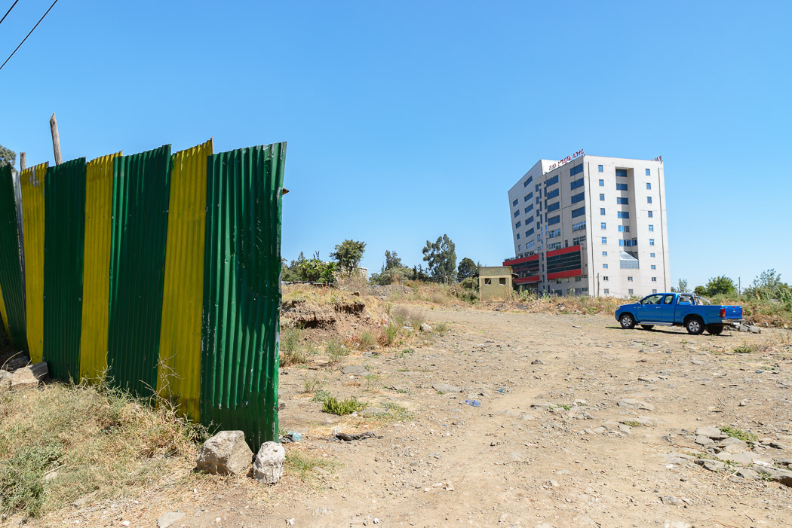
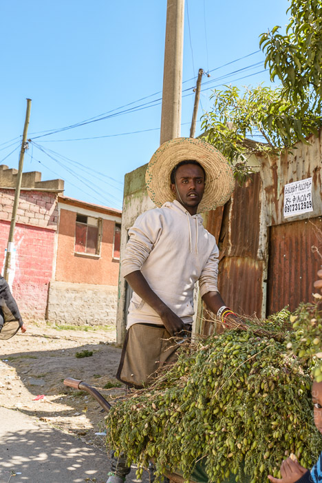
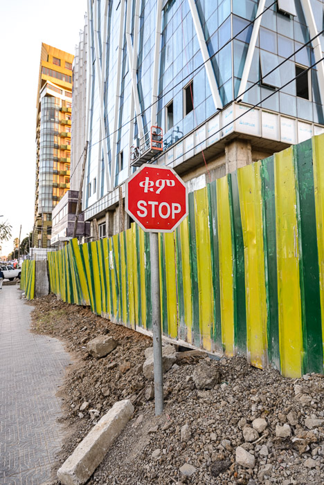
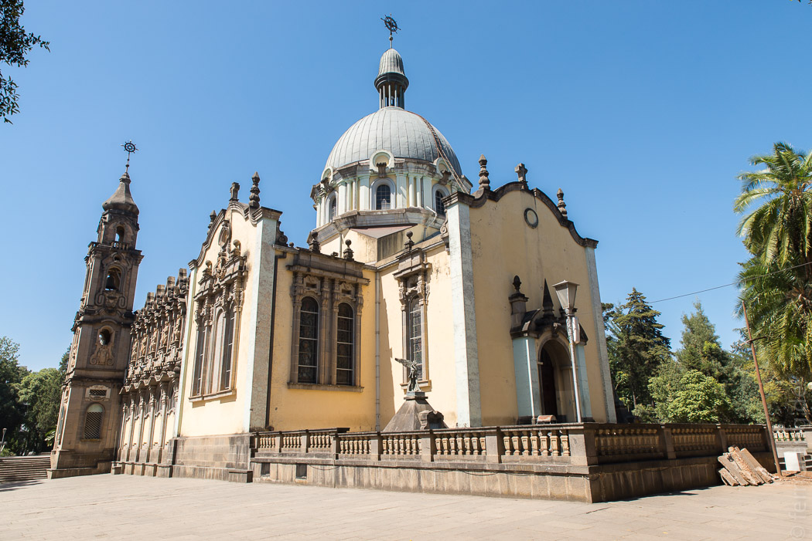
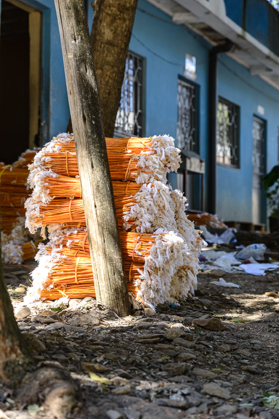
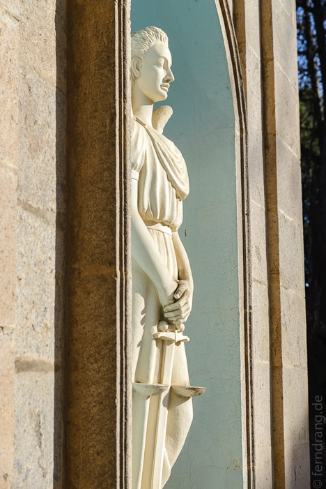
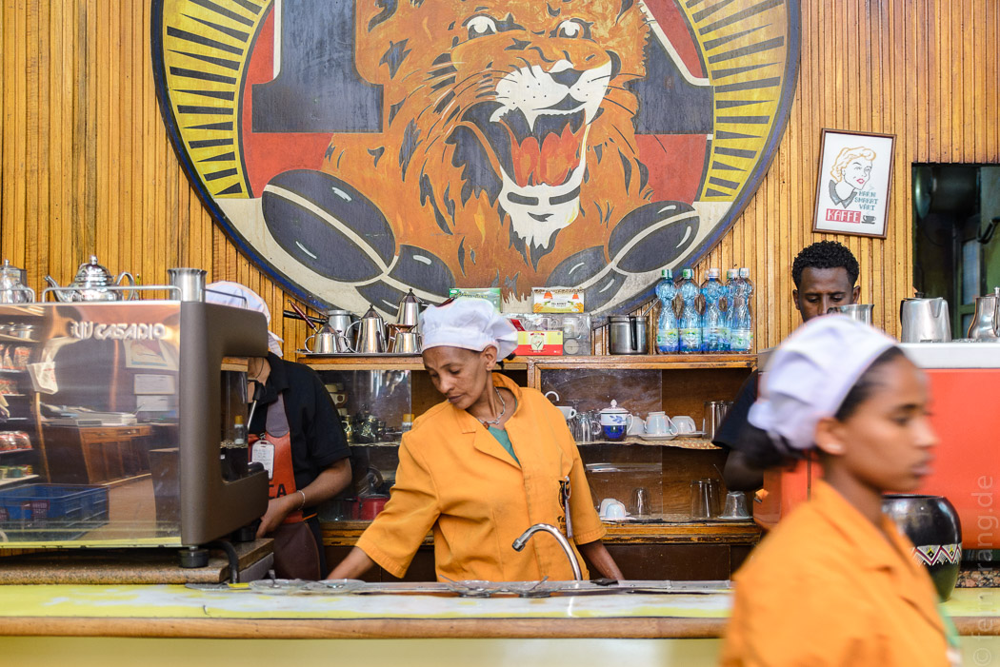
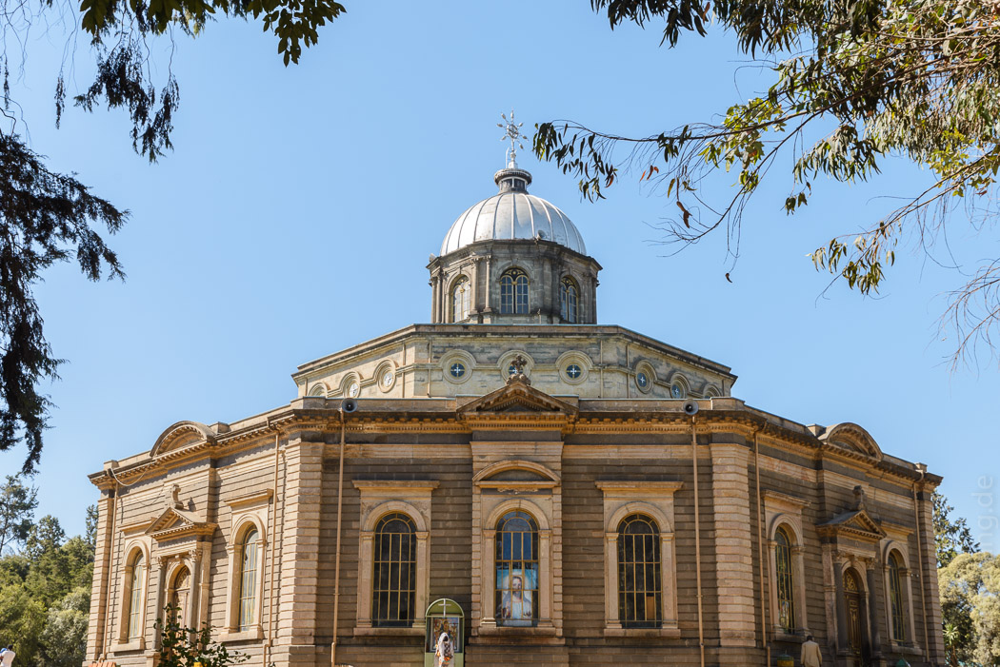
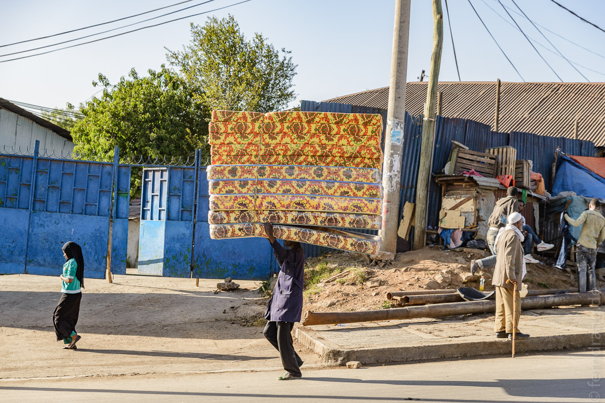
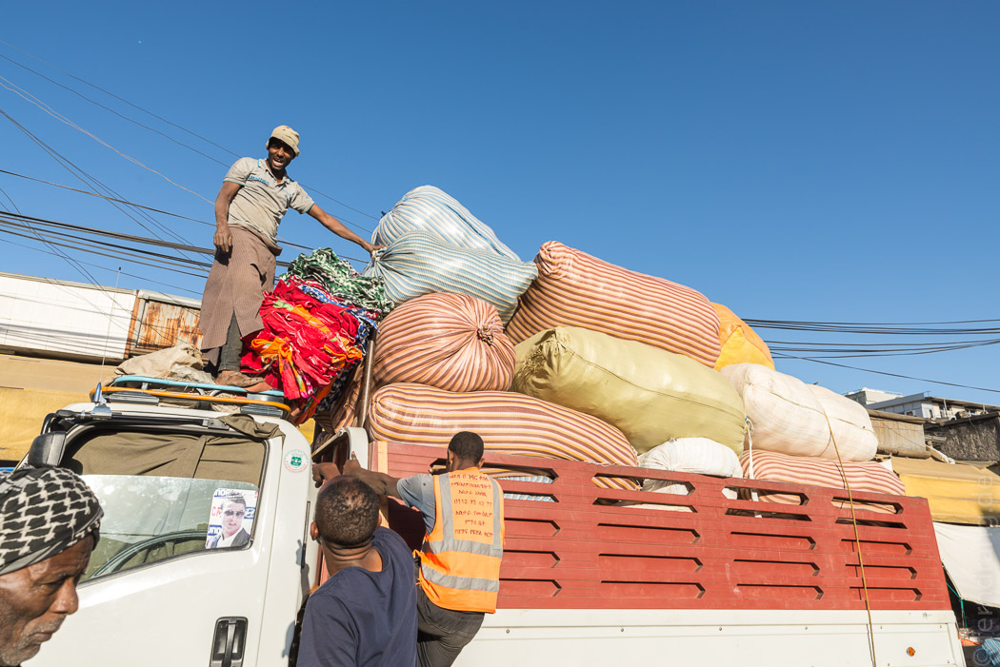

19/12/2016
Addis Abeba
Addis Abeba begrüßt uns mit ähnlichen Temperaturen wie Köln bei der Abreise. Allerdings sind wir erst um 2 Uhr nachts angekommen, doch die Temperatur ist empfindlich kalt. Die Stadt liegt auf über 2300m, daher ist das Klima etwas unafrikanisch. In der Nacht liegen die Straßen im Dunkeln und keine Menschenseele ist unterwegs. Die Fahrt vom Flughafen, den die ausufernde Stadt schon geschluckt hat, dauert kaum zehn Minuten.
Nach der ersten Nacht unter zwei Decken und einem schlechten Frühstück, sind wir losmarschiert. Der Name der Stadt bedeutet "neue Blume" auf amharisch, was wohl eher eine Vision als eine Beschreibung ist. "Die Unvollendete" wäre passender, denn eigentlich ist die ganze Stadt eine Baustelle. Überall wird gebaut, oder zumindest mal damit angefangen. Aber es sieht nicht so aus, als würde das alles irgendwann mal fertig. Die Stadt wirkt wie erstarrt zwischen Werden und Gewesen. Was es geschafft hat fertig zu werden, fängt umgehend an zu verfallen. Vielleicht kein Wunder bei einem Ort, der in 120 Jahren von 0 auf über 3 Millionen Einwohner gewachsen ist.
  Überall ist es zwar voll von Menschen, aber eigentlich besteht Addis aus vielen kleinen Orten, die mit riesigen Kreisverkehren verschraubt wurden. Denn selbst die groß angelegten Verkehrsadern veröden zwischendurch immer wieder in dorfartigen Vierteln mit Wellblechhütten und unbefestigten Straßen, über die Esel getrieben werden. Genau dort werden wir angesprochen, dass man nicht fotografieren darf, weil der Sitz des Premierministers nebenan sei.
So spazieren wir abwechselnd an Sehenswürdigkeiten und Müllhalden vorbei. Zur Holy Trinity Church gelangen wir versehentlich von hinten durch den Friedhof ohne Eintritt zu bezahlen.
  Piazza, das überlaufene, ältere Viertel, ist mehr auf der Gewesen-Seite. Hier gibt es viele Geschäfte und Cafés mit leckerem Kaffee.
Am nächsten Kreisverkehr ist einer der vielen Minibus-Punkte, die überraschend organisiert sind. Mitten im quirligen Wirrwarr stehen die Fahrgäste gesittet in einer Schlange, die ohne Drängeln und Schubsen in den Minibussen verschwindet.
Wir gehen zu Fuß weiter zur Georgskirche, die eine echte äthiopisch-orthodoxe Kirche ist. Der Grundriss besteht aus dem quadratischen Allerheiligsten innen und zwei runden Ringen drum herum. Im kleinen, angeschlossenen Museum gibt es allerlei Schätze, wie Kronen, Roben, Schirme, Stühle und allem, was Haile Selassie sonst noch in der Kirche benutzt haben könnte.
Das Gegenteil dieser friedlichen Anlage ist wieder nur einen kurzen Marsch entfernt: Der Merkato - einer der größten Märkte Afrikas. Was anderorts vielleicht ein größerer staubiger Platz ist, ist hier ein ganzes Stadtviertel. Es ist wahrscheinlich der stressigste Ort in ganz Äthiopien. Überall schieben sich Menschen durch die Gassen, jeder ist bepackt. Die Träger türmen sich so viel auf den Rücken, wie sie tragen können und rennen dann schreiend los. Wer im Weg steht, wird umgerempelt. Ein Schritt zur andern Seite und man steht in der Bahn der Sackkarrenschieber, die nur bremsen, wenn sie ihr Ziel erreicht haben. Ganze Straßen stehen gepackt voll mit Lastwagen, die meterhoch mit Säcken, Tonnen und Kisten beladen sind. Überall turnen Arbeiter herum, um sie abzuladen oder noch ein paar Kisten unterzubringen. Natürlich ist auch hier Baustelle, wer nicht auf den Boden guckt, landet in einem Loch oder einem Sandhaufen. Nachdem wir eine Weile ziellos durch die Gassen gehetzt sind, spuckt uns der Merkato unverdaut wieder aus.
 Mit Einbruch der Dunkelheit wird es nicht ruhiger auf den Straßen. Bei uns um die Ecke machen sich zwei Arbeiter daran, die Straße aufzureißen: Einer sägt, der andere leuchtet mit dem Handy. 100m weiter wird auf die gleiche Weise ein Kabel verlegt.
In einem Restaurant machen wir Bekanntschaft mit dem berühmten Injera, ein (saurer) Sauerteiglappen mit schwammartiger Konsistenz. Das ist Beilage und Essbesteck in einem, funktioniert also wie anderswo Fladenbrot.